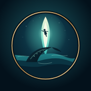

比斯泰德 Beastidal
《御獸與遠航》測試版 · v0.73.0
Android 下載 APK、iPhone / iPad 安裝描述檔；電腦直接用瀏覽器開網站就能玩。
Android 測試版 APK
下載 APK- 點上面的「下載 APK」，下載完成後點通知或在「檔案 › 下載」開啟它。
- 第一次會提示「允許安裝不明應用程式」：點「設定」，打開瀏覽器（例如 Chrome）的允許開關，返回。
- 按「安裝」。若跳出 Play 安全防護的掃描提示，選「仍要安裝」。
- 打開「比斯泰德」，會自動橫向全螢幕。返回鍵會先關閉遊戲裡的視窗。
iPhone / iPad 描述檔
下載描述檔- 用 Safari 點上面的「下載描述檔」，選「允許」。
- 打開「設定」，最上方會出現「已下載描述檔」，點進去。
- 按「安裝」，輸入手機密碼，再按一次「安裝」。
- 回到主畫面，點「比斯泰德」圖示，就會全螢幕開始遊玩。